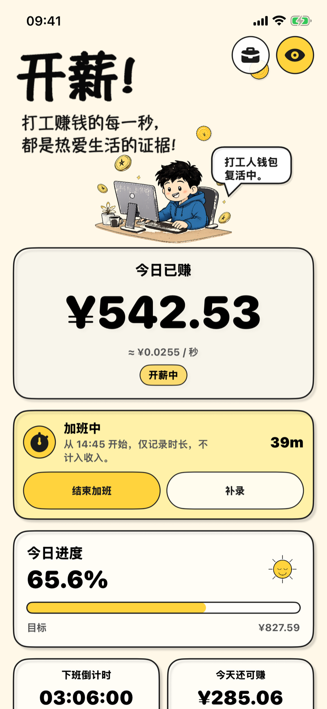
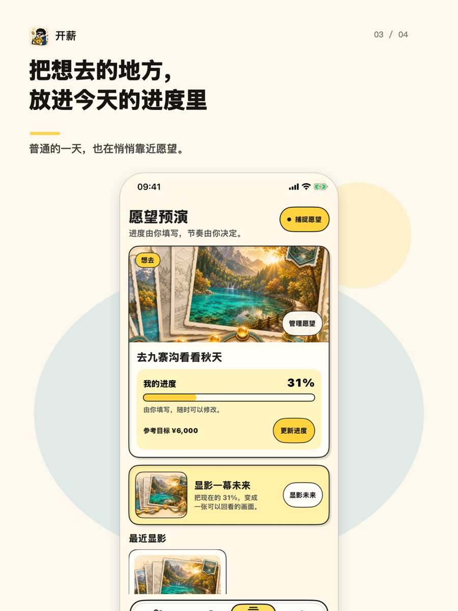

看见今天正在走完
设好上下班时间和薪资后，首页会显示今日已赚、进度条、下班倒计时和今天还可赚。数字往前走，这一天就不再像没有尽头。
- 今日已赚
- 下班倒计时
- 加班与提前下班
iPhone · 下班倒计时 · 今日已赚
开薪把今日已赚、下班倒计时和锁屏小组件放在一起。它不劝你热爱上班，只陪你把今天过完。
免费使用，PRO 一次买断。金额按你的设置估算，不是工资条，也不是考勤记录。

设好上下班时间和薪资后，首页会显示今日已赚、进度条、下班倒计时和今天还可赚。数字往前走，这一天就不再像没有尽头。
把小组件放到桌面，或打开锁屏与灵动岛实时活动。抬眼就知道还要多久，不必每隔几分钟解锁一次。
愿望进度由你自己更新。每过完一个工作日，可以手动靠近一点。不是打鸡血，只是给普通的日子留一个盼头。

搜「工资 App」时很容易下错。开薪只做情绪和进度，不做财务核算。
想把漫长工作日变得可看见、可结束的上班族、兼职和自由职业者。需要锁屏倒计时、今日已赚和愿望进度的人。
需要法定工时统计、工资条核对、加班费核算、报税或公司考勤的人。请用专业工具，不要用开薪当凭证。
iPhone 上的下班倒计时和今日已赚工具。它把工作日变成看得见的进度，并显示在锁屏、桌面小组件和灵动岛上。
默认只存在本机。分享卡片默认隐藏金额。你可以随时打开隐私模式。
下班倒计时、今日已赚和基础锁屏可用免费功能。PRO 是一次买断，用于 iCloud 同步、完整历史和主题。
不保证和工资条一致。它按你输入的薪资和工作时间估算，只用来看见今天正在过去。